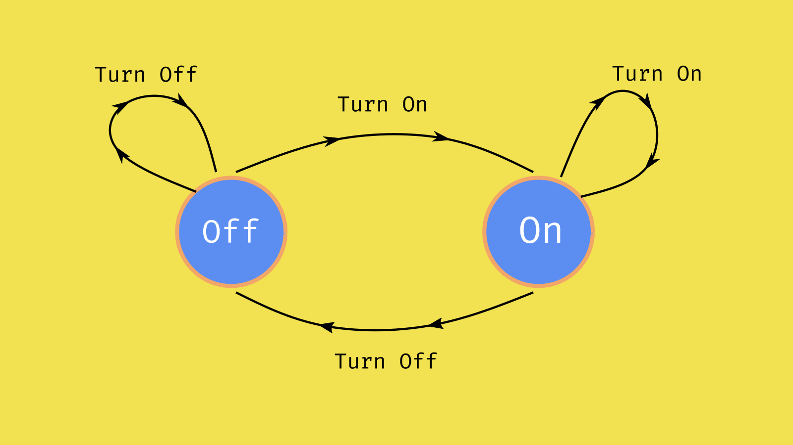
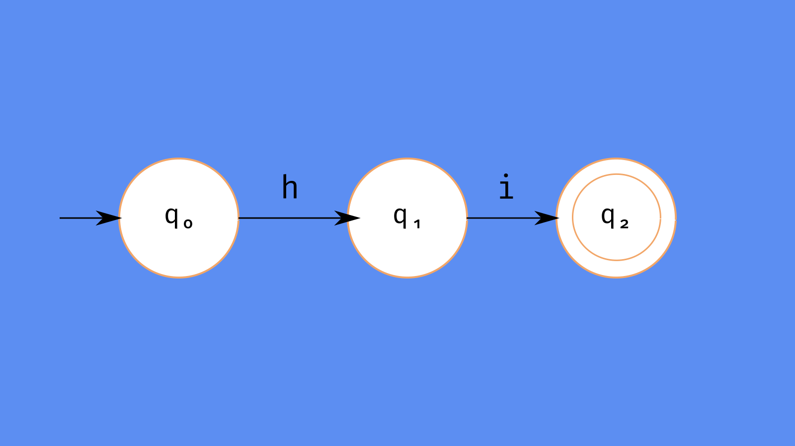

The internet is arguably the most important invention of the 20th century, and its widespread adoption
provides ample proof. India has the second largest number of internet users, most of whom access the internet
through their smartphones. I don't intend to extol the virtues of the internet in this post, but to scrutinize the
mechanism which has made this possible—computers.
The Future
Computers come in all shapes, sizes and capacities. From the very tiny computer ticking in your wristwatch to the ones
maneuvering a space shuttle, they have opened up avenues for automation in a wide variety of industries, but what else
can be done with them? Are there applications much more impactful than the internet waiting to be discovered? Is there
a limit to what can be computed?
Computers and Abstract Machines
The answers to the last question can be found in a branch of the field of theory of computation,
called automata theory. Before explaining
what automatons are, here are some definitions to know:
- Automata
-
- A mathematical model of computer hardware and software.
- Or an abstract machine.
- Finite State Machine
-
-
It is an abstract model of a machine(automaton) which can be in exactly one of a number of states
at a given time.
To study what a computer can or cannot do, we study its capacity to perform a computation (such as addition),
through the notion of an abstract machine called an automaton (plural: automata). In this case, we choose to
ignore the physical aspects of a machine, such as the materials used for construction, physical effects such as
friction between components, heat released etc. The advantage of such a mode of analysis is that we an theoretically
the possibility or impossibility of a computation.
The Idea of a Machine
Although the word "machine" is frequently used in daily conversations, asking someone to define a machine often introduces
a lot of ambiguity, since the answer depends on what the person thinks a machine is. A magnifying glass is
definitely not considered as a machine by most people, while a sewing machine is. Most people think of machines as a
collection of moving parts working together to complete a given task. If we consider this definition, does that imply that
the cells in an organism are the parts of an overall machine making up the body of the organism? In short, the definition
of machines from everyday conversations is not so useful for scientific analysis.
Eliminating ambiguity
Since a precise definition of a machine is not possible, in computer science, we try to study an abstract version of a
machine, called an automaton. Abstraction of underlying details leaves us with a barebones representation of what the
machine actually does.
A real world example
Assume that you need to start your car's engine and go somewhere. When you walk to the garage, you try to unlock the car
door, either using the remote key or by physically inserting the key. The car is a machine in its own right.
Before you unlocked the car, it was in the the "locked" state. After the key is used, it enters the "unlocked" state,
which allows you to drive, start the engine and perform many other actions. If in the unlocked state, you try to start
the car by using the key, then the engine will start in the ideal case, thus causing the car to enter the "running" state.
If we go up another layer of abstraction, we can consider the machine(car) as a black box, which takes in inputs(key, driver)
to change from one state to another.
Note:
Before I really show you the abstract machine, it is worth mentioning that a car isn't a deterministic machine,
since its state may be influenced by many continuously varying factors, such as friction between components of the engine,
state of charge of the battery etc.
Finite Automata

A machine of this type only exists in a finite number of states. A simple example will be a light switch.
When the light switch is in the "off" state, and it is pressed in the correct place to turn it on, it will turn on. If from the "on"
state it is pressed in th appropriate location, it will turn off. The two loops denote the transitions when the switch is
pressed the wrong way.
Deterministic Finite Automata
A deterministic finite automata or a DFA is a a type of finite state automaton that has all the properties of a finite state automaton
in addition to the ability to take accept or reject strings created from a set of symbols. It does this by running through some
well-defined sequence which is determined by the input string. The set of symbols can include anything, such as emojis 🌝,
binary numbers, and even English alphabets. This means that a string can look like "🌕🌔🌓🌒🌑" and "for".
However, we usually consider binary numbers to be the set of symbols and input strings end up looking like this "0011001101".
This automaton reads each symbol to consider its next state.
Formal representation of a DFA
A DFA M can be represented in the form of a 5–element tuple (Q, Σ, δ, q0, F)
where Q is a finite set of states which can be reached by the machine, Σ is the set containing all the input symbols
which can be used to build strings, δ represents the state transition function from the set Q×Σ→Q. q0 is the
initial state of the machine and F represents the set of accepting states.
Example

The above diagram represents a DFA which accepts the string "hi" to reach state q2. The DFA can be described as
follows:
- Q = {q0, q1, q2}
- Σ = {h, i}
- q0 is the initial state
- F = {q2}
-
δ is the transition function applied as follows:
- δ(q0, h) = q1
- δ(q1, i) = q2
The edges denote the transitions from one state to another, and the nodes are the various states reached by the
machine upon accepting each symbol from the string "hi".
Note:
The q0, q1 and q2 are the states of the machine and not three different machines.